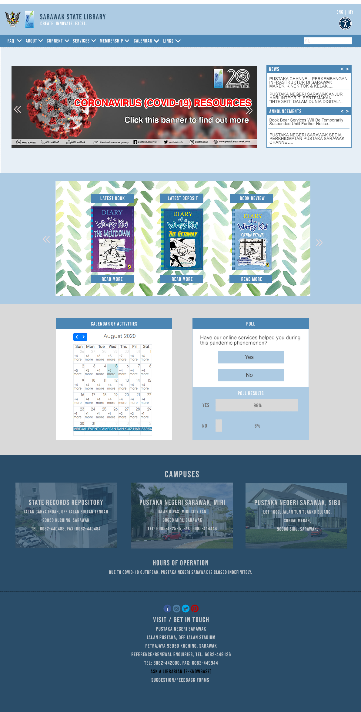
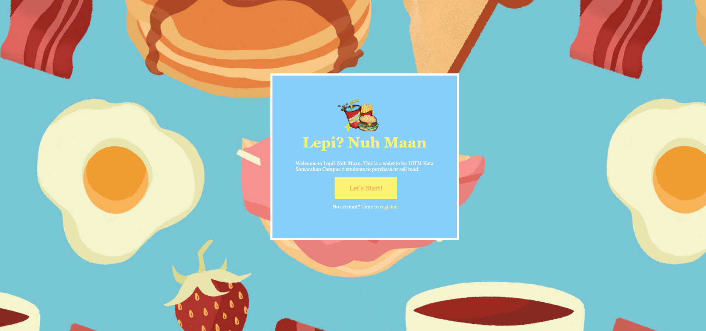
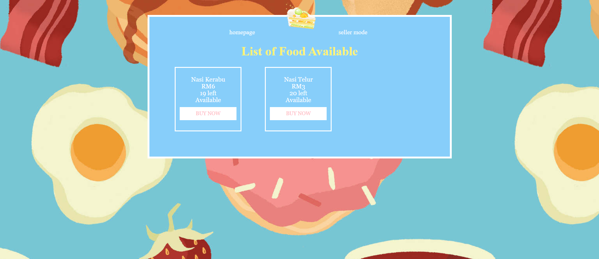
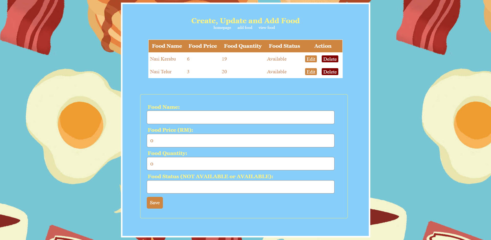
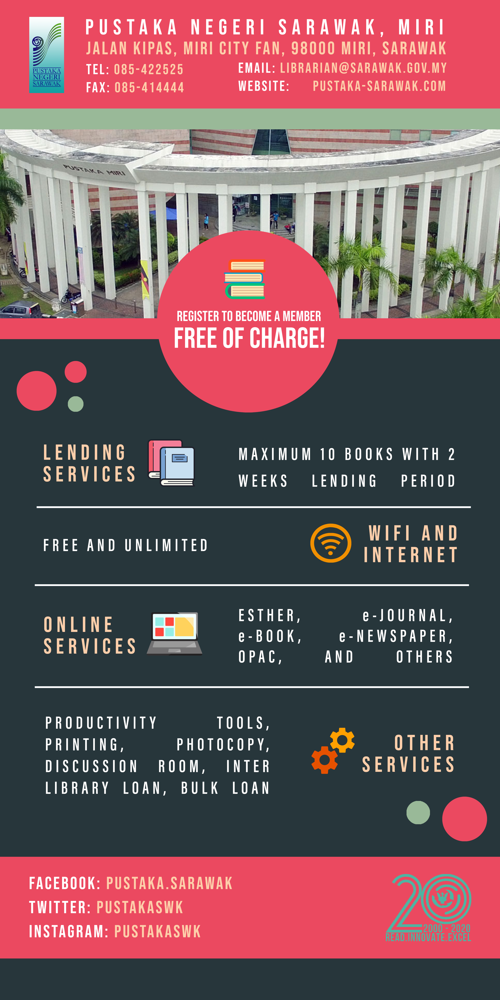
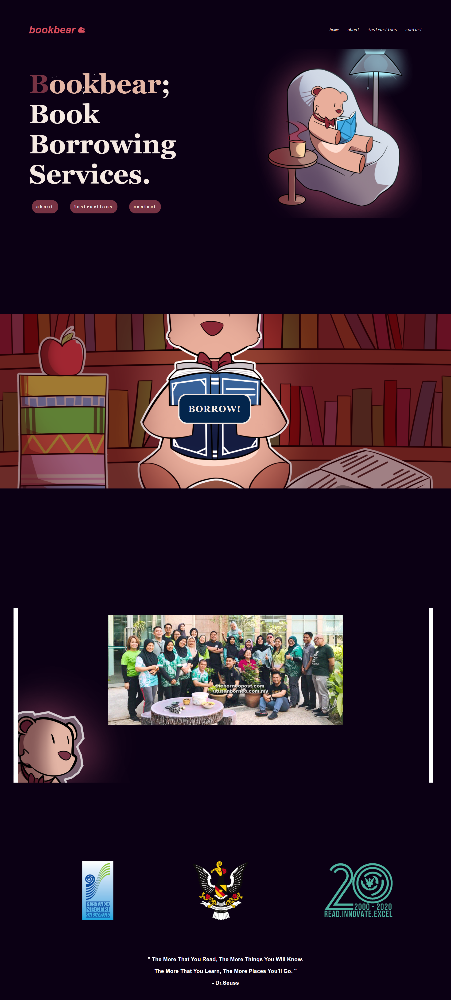

The following are my work samples.
Sarawak State Library Website Design Proposal

Lepi Nuh Maan Project: Website Design



Makey Makey Banner for Sarawak State Library: Miri Branch

Member Registration Banner for Sarawak State Library: Miri Branch

Bookbear Website Design for Sarawak State Library
